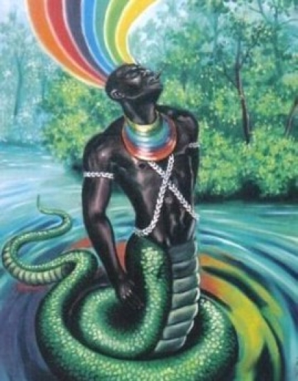

Òsùmàrè
Òrìsà do Arco-Irís !!! Òsùmàrè , filho de Nanã, nasceu com o destino de ser seis meses um monstro com esse nome, e seis meses uma linda mulher chamada Bessem. Aos poucos Bessem revoltou-se com sua mãe Nanã, pois não conseguia ter um amor que durasse por muito tempo. Seu companheiro sempre desaparecia quando ela se transformava em monstro. Um dia Òsùmàrè encontrou Esú e este, como sempre apreciou criar discórdias, semeou um conflito entre o deus do arco-íris e a velha Nanã, aconselhando Osunmaré a tomar a coroa do reino de jeje, que pertencia a Nanã. Òsùmàrè foi ao palácio de Nanã aterrorizando a todos. Nanã suplicou-lhe que não matasse ninguém, tentando dissuadir o filho de seu intento. No entanto acabou entregando-lhe sua coroa de rainha. Desde então Òsùmàrè reina sobre os jejes, no entanto continua sendo um monstro chamado Osunmaré e uma linda mulher chamada Bessem.
Irmão gêmeo de Ewá e tendo como irmãos mais velhos Osayin e Obaluaê - todos filhos de Nanã - Osumare sempre foi franzino , mas dotado de grande inteligência e capacidade. Um dia frente à frente com OLOKUM, mãe de Yemonjá, perguntou-lhe como poderia achar pedras brilhantes , preciosas. Osumare pensou e respondeu: -Senhora dos Oceanos, é preciso que faças um investimento, me dando seis mil búzios (moeda corrente)". "Sim respondeu, Olokum". Osumare apontou para a própria casa de Olokum, o mar , explicando-lhe que nas partes rasas poderia encontrar o que procurava. Olokum ficou tão feliz que deu à ele , além dos seis mil búzios , a capacidade de transformar-se em serpente e poder , com a ponta do rabo tocar a terra e com a cabeça tocar o céu. Com tal poder Osumare transformou-se em serpente esticou-se até a terra de Olorum, no céu e com os seus seis mil búzios falou ao criador: -"Pai cheguei até o Senhor. Tive de esticar-me demais para pedir-lhe ajuda, para fazer de mim aquele que tem capacidade de dobrar tudo que tem". E Olorum dobrou o número de búzios de seis para doze mil. Daí pra frente Osumare passou a ser consultado sobre os grandes negócios. Xangô fez dele seu consultor e grande conselheiro, aumentando sua riqueza de Deus do Trovão ,ao mesmo tempo que a do próprio Osumare. Este poder de se transformar em serpente e ir até o céu deu origem à um Oriki (Poema) muito bonito: " Osumare egó bejirin fonná diwó -O Arco -Íris que se desloca com a chuva e guarda o fogo no punho!" Certa vez, Sàngó viu Òsùmàrè passar, com todas as cores de seu traje e todo o brilho de seu ouro. Sàngó conhecia a fama de Òsùmàrè não deixar ninguém dele se aproximar. Preparou então uma armadilha para capturar Òsùmàrè. Mandou uma audiência em seu palácio e, quando Òsùmàrè entrou na sala do trono, os soldados chamaram para a presença de Sàngó e fecharam todas as janelas e portas, aprisionando Òsùmàrè junto com Sàngó. Òsùmàrè ficou desesperado e tentou fugir, mas todas as saídas estavam trancadas pelo lado de fora. Sàngó tentava tomar Òsùmàrè nos braços e Òsùmàrè escapava, correndo de um canto para outro. Não vendo como se livrar, Òsùmàrè pediu a Olorum e Olorum ouviu sua súplica. No momento em que Sàngó imobilizava Òsùmàrè, Òsùmàrè foi transformado numa cobra, que Sàngó largou com nojo e medo. A cobra deslizou pelo chão em movimentos rápidos e sinuosos. Havia uma pequena fresta entre a porta e o chão da sala e foi por ali que escapou a cobra, foi por ali que escapou Òsùmàrè. Assim livrou-se Òsùmàrè do assédio de Sàngó. Quando Òsùmàrè e Sàngó foram feitos Orisás, Òsùmàrè foi encarregado de levar água da Terra para o palácio de Sàngó no Orum, mas Sàngó não pode nunca aproximar-se de Òsùmàrè.
Notícias...
----------------------------------
Copyright © 2011- Todos direitos reservados à ACCAIA
Rua Arildo Jose da Silva,99 - Itinga Joinville - SC - Cep: 89245000
::: Suporte 04791261971 :::